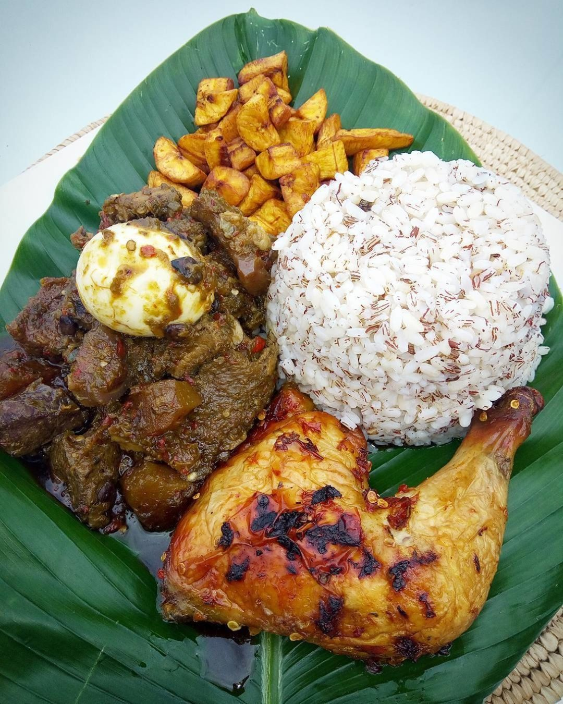

Check out for the African food
I realy enjoyed the rice, i ordered during my stay in the country

You can see this in the eastern part of the country
Ogbono soup is very delicious when cook with stock fish, i enjoyed it during my vacation in Nigeria, i love it.

jollof
Oh my goodness, Nigeria jollof rice is very delicious


This is a typical yoruba Ibadan indigene favorite food.
Eforiro
Oh my goodness, I almost bite my fingers, it was so delicious
Ofada Rice
The most delicious rice ever, I love it
Ofada